Funzioni
Abbiamo introdotto il concetto di relazione come sottinsieme del prodotto cartesiano, adesso ci occupiamo di particolari relazioni che soddisfano una proprietà speciale, espressa dalla seguente definizione.
Definizione 1.3.0 Una funzione f da un insieme X ad un insieme Y è una relazione tra X e Y, ossia un sottonsieme del prodotto cartesiano f ⊆ X x Y che soddisfa la seguente proprietà
∀x ∈ X, ∃!y ∈ Y : (x,y) ∈ f (1.3.1)
o equivalentemente
(x, y1), (x, y2) ∈ f ⇒ y1 = y2
Scriveremo f(x) = y al posto di (x,y) ∈ f. Usiamo la notazione f: X ⟶ Y per rappresentare la funzione f da X a Y. Chiamiamo X il dominio di f e Y il codominio di f. □
Esempio 1.3.2. Sia A = {a1, a2, a3} e B = {b1, b2, b3}, e si definisca la relazione f1 ⊆ A x B by
f1 = {(a1, b1), (a2,b1), (a3, b2)}
Questa relazione è una funzione dato che ∀x in A esiste esattamente un y ∈ B tale che (x,y) ∈ f1. Sia ha f1(a1) = f1(a2) = b1 e f1(a3) = b2. Anche se f1 è definita su tutto A, non tutti gli elementi di B hanno una controimmagine, infatti ∄x ∈ A : f1(x) = b3. L'immagine di A sotto f1 è f1 (A) = {b1,b3}. ■
Una funzione è quindi un insieme di coppie ordinate (x,y) dove il primo elemento x della coppia appartiene all'insieme X, il dominio e il secondo elemento y all'insieme Y, il codominio, tali da soddisfare la proprietà (1.3.1).
Una funzione si può anche definire informalmente nel seguente modo.
Definizione 1.3.3. Una funzione è una terna (A, B, f) dove A, B sono due insiemi e f è una legge che ad ogni elemento di A associa uno e un solo elemento di B. In simboli, scriviamo f : A → B. Affinché f sia una funzione, deve essere
∀x ∈ A, ∃!y ∈ B : y = f(x).
Notiamo che, dalla definizione, a diversi x può corrispondere lo stesso y.
Il ruolo del codominio non sembra tanto chiaro a prima vista: sembra una specie di contenitore dei valori assunti da f (cioè i punti di B che si possono scrivere come y = f(x)).
L’insieme dei punti assunti da f è detta immagine di f e si denota con im f, ossia
im f = f(A) = {y ∈ B : ∃x ∈ A, y = f(x)} ⊆ B.
Da notare che in generale B contiene più punti di quelli assunti da f (cioè B contiene strettamente l’insieme im f), e quindi sembra che ingrandendo tale insieme la funzione non cambi. Il ruolo del codominio sarà chiaro quando introdurremo il concetto di funzione inversa.
f: A → B
The function is thus specified by three objects: the rule that establishes the correspondence, its domain, and its codomain. Changing any one of them will change the function, and it will determine whether a correspondence is a function.
Example 1.3.4. Let X = {1, 2, 3, 4} and Y = {D, B, C, E}. The law f: X → Y defined as f(1) = D, f(2) = B, f(3) = C, f(4) = C is a function. We can represent it with the following diagram
One can observe that in Example 1.3.1, there are elements in the domain that are associated with the same element of the codomain, e.g. f(3) = C, f(4) = C. This does not contradict the definition of function, because the definition does not state that the different elements of X can't be mapped to a same element of Y. This is an additional property that defines injective functions.
A very simple, but nontheless important, example of a function is the identity function on a set A; this is the function
idA: A ⟶ A
which leaves every element of the set A fixed, that is idA(a) = a for all elements a ∈ A.
Definizione 1.3.5. Si dice grafico di f: A → B l'insieme
Gf = {(x,y} ∈ A x B: y = f(x)} ⊆ A x B
Il grafico è un sottoinsieme del prodotto cartesiano A × B, dunque è un insieme di coppie ordinate. La proprietà di cui godono i punti del grafico è la seguente
∀x ∈ A, ∃!y ∈ B : (x,y) ∈ Gf (1.3.4)
Il sottoinsieme G di A x B (i.e. la relazione G da A a B) data da
G = {(a, f(a)) | a ∈ A}
è il grafico della funzione.
Segue che un insieme del prodotto cartesiano di A e B che non gode di questa proprietà NON può essere il grafico di una funzione.
G(f) è in generale una (linea) curva nel piano con la proprietà che ogni retta verticale x = x0 con x0 ∈ A interseca G(f) in un solo punto, il punto (x0, f(x0)). È dunque chiaro che non tutte le linee curve nel piano sono il grafico di una funzione di variabile reale.
Esempio 1.3.6 Consideriamo A × B = {x ∈ ℝ, − 1 ≤ x ≤ 1} × ℝ e consideriamo il sottoinsieme dato dalla circonferenza
γ = {(x, y) : −1 ≤ x ≤ 1, x2 + y2 = 1}
Allora γ non è il grafico di una funzione da A in B perché γ non soddisfa la proprietà (1.3.4). Infatti al punto x = 0 corrispondono due y (precisamente: y1 = 1 e y2 = −1) per i quali (x, y) ∈ γ. Invece γ ∩ {(x, y) : x ∈ A, y ≥ 0} è un grafico. ■
Funzioni iniettive, suriettive, biunivoche
Definizione 1.3.7 Sia f: A → B. Si dice che f è una funzione iniettiva se
∀x1, x2 ∈ A, [(x1 ≠ x2) ⇒ (f(x1) ≠ f(x2))]
⇕
∀x1, x2 ∈ A, [(f(x1) = f(x2)) ⇒ (x1 = x2)]
Attenzione a non confondere l’ordine in cui è scritta la formula: infatti la proposizione
∀x1, x2 ∈ A, [(x1 = x2) ⇒ ((f(x1) = f(x2))]
è verificata da ogni funzione.
Esempio 1.3.8
La funzione f: ℝ ⟶ ℝ definita da f(x) = x è iniettiva;
La funzione f(x) = (2x + 1)/(x −1) (di dominio ℝ \ {1} è iniettiva) perché
f(x2) non è iniettiva perché f(1) = f(−1)
Le funzioni iniettive hanno così la caratteristica che se un certo y è immagine di qualche punto di dom f, allora è immagine di un solo punto.
Non tutti gli elementi di B devono necessariamente corrispondere a elementi di A, ma quando questo accade allora il codominio della funzione è anche la sua immagine, i.e. Im(f) = B, la funzione è detta uriettiva, o surgettiva (en. onto o surjective).
Definizione 1.3.9 Una funzione f: X → Y è suriettiva se,
∀y ∈ Y, ∃x ∈ X : y = f(x) □
Dalla definizione segue che una funzione f è suriettiva se Im f = Y.
Esempio 1.3.10.
La funzione f: ℝ → ℝ definita da f(x) = x è suriettiva.
La funzione f ℝ\{1} → ℝ definita da f(x) = (2x + 1)/(x − 1) non è suriettiva perchè, ad es., y = 2 non si può scrivere come f(x) per qualche x ∈ ℝ\{1}. Infatti l'equazione
(2x + 1)/(x − 1) = 2
non ha soluzione, dunque la funzione NON assume mai il valore 2.
f: ℝ → ℝ definita da f(x) = x2 non è suriettiva, perché y = −1 non è mai assunto da f. Notiamo che
im f = {y ∈ ℝ : y ≥ 0} ⊆ ℝ
f è suriettiva, i.e., ∀y ∈ B, ∃x ∈ A : y = f(x);
f è iniettiva, i.e l’elemento x ∈ A al punto 1) è unico.
- The square-root function f: ℝ+ → ℝ, x ⟼ √x, is defined only on the nonnegative real numbers, is injective but not surjective as there are no negative numbers in the range;
The absolute value function f: ℝ → ℝ, x ⟼ |x|, is not injective and not either surjective as there are no negative numbers in the range;
The hyperbola f: ℝ\{0} → ℝ, x ⟶ 1/x, is not defined at 0, so it is a function from ℝ\{0} to ℝ. It is injective but not surjective to ℝ since it 1/x is never zero;
The sine function f: ℝ → [−1, 1], x ⟼ sin x, being periodic is not injective but it is surjective;
The tangent function f: ℝ\{π/2 + kπ} → [−1, 1], x ⟼ tan x; is not defined when x = πk + π/2, where the tangent function has a vertical asymptote. The tangent function is periodic and hence not injective but it is surjective;
The arctangent function x ⟼ tan−1 x, is injective when restricted to domain (−π/2, π/2) and surjective onto ℝ. As a function from ℝ to ℝ is injective but not surjective, since the range is exactly (−π/2, π/2);
The natural exponential function f: ℝ → ℝ, x ⟼ ex, is injective but not surjective as there are no negative numbers in the range;
The natural logarithm function f: ℝ+ → ℝ, x ⟼ logx, also commonly denoted ln x, is injective but not surjective onto ℝ.
Data f(x) = 2x − 1 la funzione inversa f−1(y) è la funzione che si ottiene così: da
y = f(x) ⇔ y = 2x − 1 ⇔ x = (y + 1)/2
si ottiene che f−1(y) = (y + 1)/2.
Data f(x) = ex la funzione inversa è f−1(y) = log y. Infatti da
y = f(x) ⇔ y = ex ⇔ x = log y
si ottiene che f−1(y) = log y.
f is injective if and only if X = f−1(f(X)) for all X ⊆ A.
f is surjective if and only if f(f−1(Y)) = Y for all Y ⊆ B.
If f is injective, then |A| ≤ |T|;
If f is surjective, then |A| ≥ |T|;
If |A| = |T|, then f is bijective, iff, f is both injective and surjective.
Si noti che l'iniettività e la suriettività di una funzione non dipendono solo dalla formula che definisce la funzione ma anche dal dominio e codominio: la funzione g: ℝ+ → ℝ, x ⟼ x2 è iniettiva dato che il quadrato di ciascun numero reale è un unico numero reale positivo. Ma non è suriettiva, dato che f(ℝ+) ≠ ℝ; per renderla suriettiva si consideri g: ℝ → ℝ+ definita da g(x) = x2 (con un codominio ristretto). In questo caso la funzione è suriettiva, dato che f(ℝ) = ℝ+.
Le due nozioni di iniettività e suriettività sono indipendenti: vi sono funzioni che possono essere iniettive ma non suriettive e viceversa e invece funzioni che possono essere sia iniettive che suriettive.
Definizione 1.3.11. Una funzione iniettiva e suriettiva si dice biunivoca (o biettiva o bigettiva). Osserviamo che se f: A → B è biettiva, allora
Dunque f è biettiva se e solo se
∀y ∈ B, ∃!x ∈ A : y = f(x)
Osserviamo che la relazione sopra definisce una funzione da B in A, perché ad ogni y ∈ B associa uno e un solo elemento x ∈ A; l’elemento x è quell’unico elemento tale che f(x) = y.
La funzione f1 dell'esempio 1.3.1, non è né iniettiva né suriettiva, infatti f1(a1) = f1(a2) e a1 ≠ a2 e ∄x ∈ A : f1(x) = b3.
Funzione inversa, restrizione
Definizione 1.3.12 Sia f : A → B una funzione biunivoca. Si dice inversa di f e si denota con f−1 la funzione f−1 : B → A che associa ad y ∈ B l’unico elemento x ∈ A tale che y = f(x). □
Esempio 1.3.13.
Se una funzione f è biunivoca allora il grafico di f−1 è:
Gf−1 = {(y, x) ∈ B × A : x = f−1(y)} = {(y, x) ∈ B × A : (x, y) ∈ Gf}
Si ha allora che il grafico di f−1 è il simmetrico di quello di f, perchè si ottiene scambiando A con B (nel caso di funzioni reali a valori reali il grafico della funzione inversa è il simmetrico rispetto alla bisettrice del primo e terzo quadrante di quello di f.)
Definizione 1.3.14. Se f : A → B ed E ⊆ A, si dice restrizione di f ad E la funzione f |E : E → B definita da f|E(x) = f(x) ∀x ∈ E.
Esempio 1.3.15. Consideriamo la funzione f : ℝ → {x ∈ ℝ : x ≥ 0} definita da f(x) = x2. Essa non è iniettiva e non è invertibile, ma se consideriamo la funzione f|ℝ+ dove ℝ+ := {x ∈ ℝ : x > 0} essa risulta iniettiva. La sua inversa si costruice così: parto da y = x2 ⇔ x = √y, da cui (f|ℝ+)−1(y) = √y. ■
Dall’esempio sopra si capisce che una funzione che non è iniettiva si può rendere iniettiva semplicemente considerando opportune restrizioni della funzione stessa.
The function f: ℝ → ℝ defined by f(x) = x3 is injective because each cube of a real number has a unique real cube root and also surjective, hence bijective, with inverse f: ℝ → ℝ defined by f−1 = ∛x.
Definition 1.3.12. Let S and T two subsets of A and B respectively. The inverse image or preimage of a set T ⊆ B under f, is the subset of A defined by
f−1(T) = {a ∈ A| f(a) ∈ T}
other notation include f−1[T].
The inverse image of the dicrect image, for any S ⊂ A,
f−1(f(S)) ⊇ S, equality holds if f is injective. 1.3.1
The direct image of an inverse image, for any T ⊂ B, is
f(f−1((T)) ⊇ T, equality holds if f is surjective. 1.3.2
If f: X → Y is both injective and surjective, then f is said to be injective. If f is bijective, then y = f(x) has a unique solution x ∈ X for each y ∈ Y, and the unique x is denoted by x = f−1 (y). If f is bijective, then Eqs. 1.3.1 and 1.3.2 we have
f−1(f(S)) = S, for any S ⊂ X
f(f−1((T)) = T, for any T ⊂ Y.
Proposition 1.3.13. Consider f: A → B, then
1.3.12 Examples.
The function f: ℝ → ℝ, defined as f(x) = x2 is not injective (for example f(1) = f(−1) = 1) and not even surjective. The function f:[0, +inf) → ℝ with f(x) = x2 is injective. Also the function h: ℕ → ℕ, defined as h(x) = x2 for each x ∈ ℕ is not surjective since there is no natural number x such that x2 = 2.
The function f: ℝ → ℝ, defined as f(x) = x3, is both injective and surjective since from x1 ≠ x2 follows x13 ≠ x23
The function f: ℝ → ℝ, defined as f(x) = ex, is injective but not surjective since no positive elements is mapped to negative values.
The function f: ℝ → ℝ, defined as f(x) = x3 − x, is surjective but not injective.
The function f: (0, +∞) → ℝ defined as f(x) = ln x, is surjective and injective.
1.3.13 Definition. Let f: A → B a function from A to B. If A1 is a subset of A, the function f implies a law such that for each element of A1 associate an element of B, hence a function from A1 to B. This function is known as restriction of f to A1 and indicated by f|A1. Its image is often time indicated by f(A1) rather than f|A1 (A1) to indicate the image restricted to A1 just to simplify the notation.
1.3.14 Theorem. Let f: A → B a function between finite sets
Well-defined functions
The condition that a function must be well defined means that f has a definition that assigns it a unique value
a = b ⇒ f(a) = f(b)
Example 1.3.14 Let ℚ be the set of rational number. Let
f(x/y) = x + y
for any x/y in ℚ. Does this yield to a well-defined function f: ℚ → ℝ.
Solution. The answer in in the negative. For example not that 2/3 = 4/6, but
f(2/3) = 2 + 3 = 5 ≠ f(4/6) = 4 + 6 = 10
Esempio 1.3.15 Si mostri che la funzione f: ℚ → ℚ definita da
f(x / y) = (x + y) / y
è ben definita.
Soluzione. Let a/b = c/d ∈ ℚ. Then
f(a / b) = (a + b)/b
= a / b + b /a
= c / d + c /d
= (c + d)/d
= f(c/d)
so f is well defined. ■
Characteristic function
Notation 1.3.16 The writing “BA”, or “Fun(A,B)”, is used to indicate the set {f | f: A → B}, of all functions from A to B. Particularly the symbol 2 indicates the set of two elements {0,1}. So for example 2X denotes the totality of mappings of X into the set {0,1}. □
We are going to define an important class of functions.
Let X be a set, and let 𝓟(X) be the power set of X, the set of subsets of X. Given a subset A ∈ P(X), one can ask for each point x ∈ X whether it lies in A or not. This can be expressed by the characteristic function of the subset A.
Definition 1.3.17 Let X be a fixed set. For each subset A of X define a function χA: X → {0, 1} known as characteristic function of the subset A, (or indicator function) by the rule:
so the characteristic function of the subset A, takes every element of A into 1 and every element in the complement of A into 0. The rationale for this is that every subset A of X can be identified with it characteristic function χA.
Example 1.3.18. Let the set X = {1, 2, 3, 4, 5, 6, 7}, and let its subset A = {4, 5, 6}. The characteristic function χA: X → 2 is the following:
1 ↦ 0 2 ↦ 0 3 ↦ 0 3 ↦ 0 4 ↦ 1
5 ↦ 1 6 ↦ 1 7 ↦ 0 ■
Theorem 1.3.19. Let X a set and 2: {0,1}. There exists a bijection among 𝓟(X) and the set 2X, set of all functions from X to {0,1} i.e. f: → {0,1}.
Proof. Let A a subset of X. The mapping
θ: 𝓟(X) → 2X
maps every element A of 𝓟(X) to its characteristic function χA, is bijective. We have to prove both surjectivity and injectivity of χA. We first show that it is one-to-one. Suppose θ(A) = θ(B) where A, B ∈ 𝓟(X). We must show A = B. Let x ∈ A. Then θ(A) = χA that is θ(A) is a function from X to 2X. Let x ∈ A then χA(x) = 1, so χB(x) = 1, which means x ∈ B. Thus A ⊂ B (∀x in X we've χA(x) = 1 ⇒ χB(x) = 1, iff A ⊂ B). Similarly B ⊂ A and so A = B. Next to prove that θ is onto, let f ∈ {0,1}X. f defines a unique subset A = f−1{1} of X and it is evidently the characteristic function of the subset A of X. So f = χA = θ(A).□
Property 1.3.18. Let |A| = n and |B| = m, then BA has cardinality mn.
Proof. Every function f: A → B maps an element of A to one and only one element of B; this latter element can be chosen in m possible ways f(ai), ∀i ∈ n, so there are in total m ⋅ m ⋅ ... ⋅ m = mn functions f. □
Canonical projection
Let f: X → Y be a function between two sets. We can define a relation ρf on X as follows:
x ρf y ⇐⇒ f(x) = f(y)
It is easy to verify it is an equivalence relation: Since f(x) = f(x), x ∼ x and ∼ is reflexive. If x ∼ y, then f(x) = f(y), so f(y) = f(x) and y ∼ x; hence, ∼ is symmetric. If x ∼ y and y ∼ z, then f(x) = f(y) and f(y) = f(z), so f(x) = f(z), which implies that x ∼ z, so ∼ is transitive.
For every y ∈ Y, we have f−1 ({y}) = ∅ if y ∉ Im f otherwise f−1 ({y}) = [x], with x any element of X such that f(x) = y, and [x] is the equivalence class of x modulo ρf.
Conversely, suppose we start by an equivalence relation ρ on a set X, with X/ρ, the quotient set, that is the set of all equivalence classes, then it is defined a mapping known as canonical projection over the quotient as follows
π : X ⟶ X/ρ
a ⟼ [a]
that carries x ∈ X into the equivalence class of x, [x]. such that ρπ = ρ.
Example 1.3.20. Suppose X = {1,2,3,4,5,6,7,8,9}, Y = {a,b,c,d,e} and
i(1) = c, f(2) = b, f(3) = e,
f(4) = b, f(5) = e, f(6) = c,
f(7) = b, f(8) = c, f(9) = e.
Then A/∼ = {{1,6,8},{2,4,7},{3,9},{5}}. ■